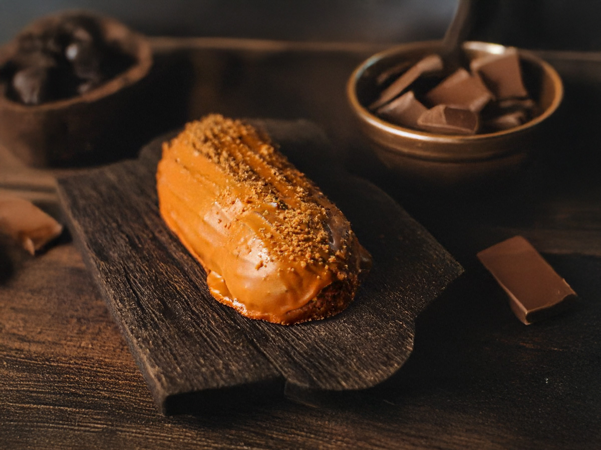

Lotuslu Ekler Nedir?
Lotuslu ekler, klasik ekler hamurunun (choux) pişirilip içine krema doldurulmasıyla yapılan, üzerine Lotus Biscoff kreması ve bisküvi parçaları eklenerek zenginleştirilmiş bir tatlıdır.
Hem çıtır hem de yumuşak dokusuyla dikkat çeker ve karamelimsi, baharatlı Lotus tadıyla
birleşince eşsiz bir lezzet sunar.

Lotuslu Ekler Tarifi
Ekler hamuru için:
- 1 su bardağı su
- 100 gram tereyağı
- 1 yemek kaşığı toz şeker
- Yarım çay kaşığı tuz
- 1 su bardağı un
- 3 adet büyük boy yumurta
İç Dolgu Kreması için:
- 3 su bardağı süt
- 1 su bardağı toz şeker
- Yarım su bardağı nişasta
- 2 adet yumurta sarısı
- 1 paket vanilya
- 1 yemek kaşığı tereyağı
Üzeri için:
- 1 su bardağı Lotus Biscoff kreması
- Yarım su bardağı Lotus Biscoff bisküvi kırıntısı
Yapılışı:
- Ekler Hamuru
- Bir tencerede su, tereyağı, toz şeker ve tuzu karıştırıp kaynatın.
- Kaynayınca ocağın altını kısın ve unu ekleyip hızlıca karıştırın. Hamur toparlanıp tencerenin kenarlarından ayrılana kadar yaklaşık 2 dakika pişirin.
- Hamuru ocaktan alıp soğumaya bırakın. Ilındıktan sonra yumurtaları tek tek ekleyerek mikserle karıştırın. Her yumurtayı iyice yedirdikten sonra diğerini ekleyin. Hamurun parlak ve akışkan bir kıvamı olmalı.
- Hazırladığınız hamuru sıkma torbasına alın. Yağlı kağıt serili fırın tepsisine parmak uzunluğunda şeritler halinde sıkın.
- Önceden ısıtılmış 200°C fırında 15 dakika, ardından fırın ısısını 180°C'ye düşürüp 20-25 dakika daha pişirin. Fırının kapağını kesinlikle açmayın, yoksa hamurlar söner. Pişen hamurları fırından çıkarıp soğumaya bırakın.
- İç Dolgu Kreması
- Tencerede süt, toz şeker, nişasta ve yumurta sarılarını karıştırın. Orta ateşte sürekli karıştırarak koyulaşana kadar pişirin.
- Kremayı ocaktan alıp vanilya ve tereyağını ekleyin. Tereyağı eriyene kadar karıştırın.
- Kremayı bir kaseye alıp üzerini streç filmle kapatın (film kremanın yüzeyine değmeli). Soğumaya bırakın.
- Birleştirme
- Soğuyan ekler hamurlarının altından küçük bir delik açın.
- Sıkma torbasına aldığınız kremayı bu delikten eklere doldurun.
- Lotus Biscoff kırıntılarını hazırlayın.
- Lotus kremasını bir tavada veya mikrodalgada hafifçe eritin.
- Kremalı eklerin üst kısmını eritilmiş Lotus kremasına batırın ve üzerine Lotus bisküvi kırıntılarını serpin.